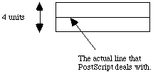

The PostScript page description language is useful for representing the printed page in a device independent manner. It is the language that the majority of the laser printers in the Department of Computer Science understand. It is also used by some of the new window managers as their graphical language.
Some features of the PostScript language are:
- PostScript is particularly suited to describe graphical information
- about 1/3 of PostScript is devoted to graphics -- the remainder is a general purpose programming language which closely resembles FORTH and other stack-oriented languages
- it is often called a "page generation language"
- it is interpreted
PostScript files can be viewed by either using some kind of viewing program or by sending them to a PostScript printer. To view a PostScript file on the workstation monitor, use the GhostScript program. To print your file, use the lpr command.
lpr -Pc135ps filename.ps
To print out the output from your PostScript source code you should make sure that the first line of your program is "%!" and then issue the same lpr command as before. If the first line of your program is not "%!", then the source code will be printed and not the image generated by the source code.
- Text:
- any typeface in any position, orientation, or scale
- Geometric Figures:
- describe locations of lines of any size, orientation, & width as well as spaces of any size, shape, or colour
- Sampled Images:
- in any scale or orientation
- current page:
- this is the "ideal page" that the image is drawn on and is independent of any output device used
- when a program begins, the current page is blank
- current path:
- a set of connected and disconnected points, lines, and curves that, together, describe shapes and positions
- a path is not actually a mark on a page (yet) but must be stroked, clipped, or filled
- clipping path:
- the boundary of the area that may be drawn upon -- originally the standard paper size but can be any size or shape
- to add 2 numbers together:
5 27 add stack: 5 27
stack: 32
- to subtract 2 numbers:
8.3 6.6 sub stack: 8.3 6.6
stack: 1.7
- the sub operator subtracts the top number on the stack from the bottom number
- to divide 2 numbers:
13 8 div stack: 13 8
stack: 1.625
- like sub, div divides the bottom number by the top number
- to perform: 6 + (3 / 8)
3 8 div 6 add stack: 3 8
stack: .375 <div operation>
stack: .375 6
stack: 6.375 <add operation>
OR
6 3 8 div add stack: 6 3 8
stack: 6 .375 <div operation>
stack: 6.375 <add operation>
Some other of the most used PostScript arithmetic operators are:
idiv - divide the bottom number by the top number but only keep the integer
mod - divide the bottom number by the top number but only keep the remainder
mul - multiply the top two numbers of the stack
neg - reverse the sign of the number at the top of the stack
Some other of the most used PostScript stack operators include:
exch - reverse the order of the top two elements of the stack
clear - removes all items from the stack
dup - duplicates the top item of the stack
pop - remove the top element from the stack
ex 1 - draw a vertical line:
This routine draws a simple vertical line.
newpath % empty the current path and start a new one
144 72 moveto % move to a new location
144 432 lineto % add a segment to the current path
stroke % paint the current path
showpage % print the current page
ex 2 - draw 2 intersecting lines:
This routine intersects a vertical line with a diagonal line.
newpath
72 360 moveto
144 72 rlineto % move using relative coordinates
144 432 moveto
0 -216 rlineto
stroke
showpage
ex 3 - draw a box:
The following routine draws a box with a line thickness value of 4. Since PostScript ignores the thickness of lines when drawing, the box will not be closed correctly.
newpath
270 360 moveto
0 72 rlineto
72 0 rlineto
0 -72 rlineto
-72 0 rlineto
4 setlinewidth
stroke
showpage

ex 4 - draw a better box:
This routine, almost identical to the previous one, draws a better box by using the 'closepath' operator. This causes the box to be closed properly and automatically by PostScript itself. Notice that the last line is derived by PostScript as opposed to having to be specified explicilty by the programmer.
newpath
270 360 moveto
0 72 rlineto
72 0 rlineto
0 -72 rlineto
closepath
4 setlinewidth
stroke
showpage % because of the 'closepath', the square is now closed
ex 5 - draw a filled box:
The following routine is a basic box drawing routine. The 'fill' command is used to demonstrate how PostScript will automatically fill in closed areas. The command 'setgray' is also used to show how PostScript can use different shades of gray. A value of 0 is black and 1 is white.
newpath
270 360 moveto
0 72 rlineto
72 0 rlineto
0 -72 rlineto
closepath
.85 setgray % set gray value to light gray
fill % this fills the box
showpage
ex 6 - variables:
Like most other languages, PostScript allows the program to use variables. In PostScript, however, variables must be defined and placed in a dictionary.
/ppi 72 def
- the / indicates that ppi is a literal and not yet in any dictionary
- the 72 is pushed onto the stack next
- the def takes the 2 objects off the stack and enters them into the current dictionary
The following arithmetic expression makes use of the value stored in ppi.
10 ppi mul stack: 10 72
stack: 720
This small program uses ppi to measure the length of lines. Recall that 72 points is equivalent to one inch.
newpath % draw a 1 inch vertical line
100 100 moveto
0 ppi rlineto
stroke
showpage
ex 7 - a procedure:
The following program uses a macro, inch, to measure lines. The code between the braces, "72 mul", is placed on the stack when the macro itself is called.
/inch {72 mul} def
newpath % draw a 5 inch vertical line
100 100 moveto
0 5 inch rlineto % causes the command: 5 72 mul
stroke
showpage
ex 8 - simple text:
PostScript can use any Type 1 font. There are literally thousands of fonts available for use so the best way to determine what fonts are available on a printer or other display device is to try to print them out.
/Times-Roman findfont % findfont looks up font in dictionary
% "FontDirectory" and places the
% appropriate dictionary on the stack
15 scalefont % takes a font dictionary from the stack
% and scales it according to the top number
% on the stack
setfont % take the scaled font dictionary off the
% stack and establish it as the current font
72 200 moveto
(type this) show % show prints a string (...)
showpage
ex 9 - arcs:
The 'arc' operator is used to draw any arcs and circles using 5 stack parameters which are:
- the X and Y locations for the centre of the circle
- the radius
- the start and end degrees (counterclockwise) of the circle for the arc
newpath % draw an arc from 45 to 90 degrees
100 150 36 45 90 arc
stroke
500 400 50 0 360 arc
fill
showpage
PostScript contains numerous operators that allow users to create graphics. PostScript also contains features that allow for the easy manipulation of bitmaps. The image operator is used to perform these functions
The image operator requires 5 arguments:
- scan length
- the number of samples per scan line
- scan lines
- the number of scan lines in the image
- bits per sample
- the number of bits making up the sample (1, 2, 4, or 8)
- an image with 1 bit sampling will print in black or white while an image with 8 bit sampling will print using the values 0 (black) through 255 (white)
- transform matrix
- the image operators impose a coordinate system on the source image:
where w is the width and h is the height
- other conventions (ie. user space) can be mapped into the PostScript convention (image space) by coordinate transformations
- a six element array that determines the mapping of samples into the one unit square imaging region
- for an image with scan length of n and scan lines of m, the following matrix is used: [ n 0 0 m 0 0 ]
- for an image whose data begins in the upper left corner as opposed to the lower left (PostScript's default), the following matrix may be used: [ n 0 0 -m 0 m ]
- for a more general definition of the transform matrix, please refer to Section 4.4 of the PostScript Language Reference Manual
- procedure
- this is the procedure that produces the data strings needed by image
- if the string does not describe the complete image, the image operator will call this procedure again and again until the number of samples implied by the first 3 arguments have been processed
- any unused data left in the string at the end of the image is ignored as are any bits left in the current character of data at the end of the scan line
ex: To place an image into a rectangle where the lower left corner is at (100,200), is rotated 45 degrees counterclockwise, and is 150 units wide and 80 high, one would execute the following prior to invoking the image operator:
100 200 translate 45 rotate 150 80 scale
We can use the preceeding string in a PostScript program, such as in the following segment:
400 400 translate % position of lower left corner
72 72 scale % make the image 1 inch by 1 inch square
8 8 1 [8 0 0 8 0 0] {<c936>} image
showpage
- The third line prints an 8 pixel by 8 line image, each pixel being 1 bit deep.
- The transform matrix will fill the unit square with the image.
- The procedure argument encloses a hexadecimal string, denoted by the angle brackets:
- each pair of characters represents an 8 bit code, therefore c936 is interpreted as the 16 bit string listed above
- it is important to note that, by default, PostScript defines images with the origin in the lower left corner and where the higher numbers are lighter colours and the lower numbers are darker colours -- in this case, 1 is white and 0 is black
The above program produces a simple bitmap where, since each line of the image is eight one-bit samples wide, each call of the procedure will supply data for two lines producing an image something like:
00110110
11001001
00110110
11001001
00110110
11001001
00110110
11001001
By changing the bits per sample a different pattern is created -- recall that 1 bit per sample results in a black and white image, 2 bits produces shades of gray from 0 to 3, 4 bits produces shades from 0 to 15, and 8 produces from 0 to 255
- generated by another program
- many programs generate output files in PostScript format -- PMDraw, Corel Draw, and Super Paint are some examples
- scanned in
- a user may decide to use a scanner to digitize an existing picture and store it as a PostScript bitmap
- created entirely by hand
- a user may also decide to generate a bitmap entirely by hand, for example, by using a pencil and some graph paper
ex: Suppose a raster image of 256 by 256, 8 bits per pixel is available -- one way to display it is:
/picstr 256 string def % string to hold image data
45 140 translate % lower left corner of image
132 132 scale % map image to 132 point scale
256 256 8 % dimensions of source image
[ 256 0 0 -256 0 256] % map the unit square to the
% source image
{ currentfile % read image data from the
% program file
picstr readhexstring pop
} image
4c 47 49 4b 4d 4c 52 4c 4d 50 53 ............
% 256 x 256 x2 hex digits of image data
% note: one 8-bit pixel is converted to two hex digits
showpage
- gsave
- save the current graphics state on a graphics state stack, which can hold up to 32 states including the current one
- grestore
- restores the most recently saved graphics state -- all the characteristics of the state including current path, gray level, line width, and user coordinate system are returned to what they were when gsave was executed
- X Y scale
- set the appropriate scaling factor for all subsequent operations
- currentpoint
- put the coordinates of the current location on the stack
- n { ... } repeat
- the repeat loop causes a procedure to be executed n times
- l m n { ... } for
- the for loop iterates a procedure from l to n by an increment (or decrement) value of m
- ( ... ) stringwidth
- stringwidth returns the length of the string ( ... ) and (usually) the value 0.0
ex: the following code will determine the width of a string and center it on some background that is 200 units wide
(PostScript) stringwidth pop
200 exch sub 2 div
0 rmoveto
(PostScript) show
Other sample files are available in /net/share/lib/ghostscript/examples. To determine which fonts are available for use in GhostScript, you may want to look in the file /net/share/lib/ghostscript/Fontmap for a list of the correct font names. The directory /net/share/lib/ghostscript/doc also contains a number of very useful documentation files for GhostScript as well as for PostScript in general.
The two books "PostScript Language Tutorial and Cookbook" and "PostScript Language Reference Manual" are very good PostScript references published by Adobe Systems Incorporated.